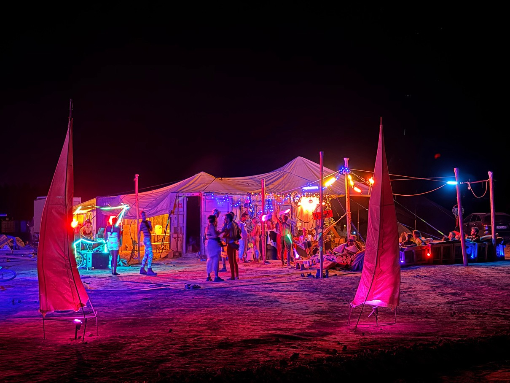
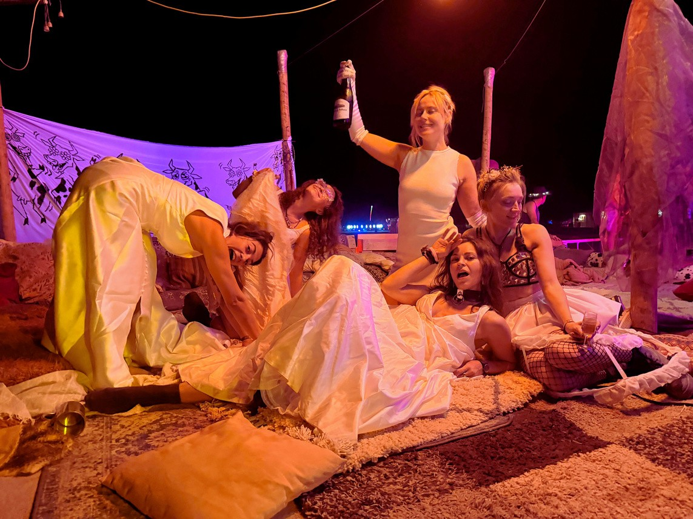
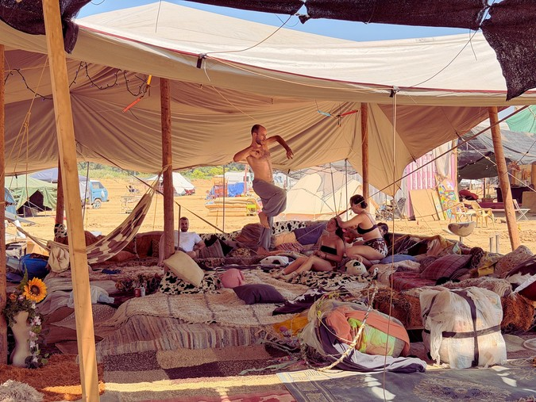
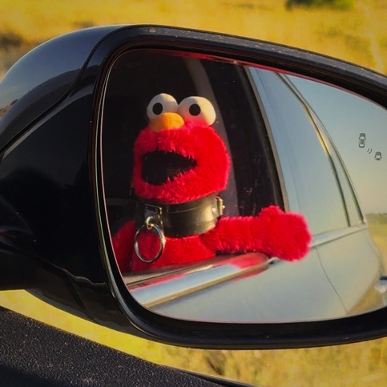

MOOWS / Issue 01 · August 2026
Elmo’s Elsewhere

Heyo folks, Elmo here!
It was my fourth Nowhere… ah, sorry, Elsewhere. This year, the camp was smaller than usual. We were 25 cows and me, Elmo. And you know, it’s a big difference, especially for Elmos. I wasn’t even sure it was gonna happen.
I noticed that we had a lot of new cows at the camp. Elmo was worried if we could spread the MoonCows DNA and vibes to them. That’s importante, yeah? But during the build, I saw how the magic was happening. And I can give you my Elmo’s word: everyone in the camp was awesome.
The weather was a huge bitch! 42 degrees, holy moly! For Elmos, you know, it sucks. I was burning all the time. I’m sure for my humans it sucked too.
Oh, this year we tried a new thing! We pre-cooked most of the meals. It saved a lot of time during the festival. A few days before the build, the Barcelona peeps came to my place, and we did a looooot of chopping. Elmo did it too, until I cut my paw and spread some Elmo wool into the chili sin carne.
Thanks to Coti; she brought dry ice! Elmo looves Coti. But for my taste, we had too many beans and lentils.
Another new thing was that we had a new location, closer to the playa. And we kept the Bull in the camp. And for me, it was better, so I could hear all the DJs. I especially loved Ira’s set on Acid Friday.
I’m not saying this because she takes me to the desert every year, but I know it took her three Nowheres to finally start DJing.
On Thursday, we had a big storm that broke our bar tent. Oh man, that was the strongest one I’ve ever seen there. But these crazy people just said, “From now on, we have a topless bar!” And they kept partying. Very cowsy attitude. Which, in the end, was a good idea. We became more visible from the playa.
The bar this year was cool, but again, we had so many radlers and beers left at the end. Next year, Elmo lead the bar and avoid this constant mistake. Elmo good at maths. Oh yeah, we had chocolate milk. I think it was Vish’s idea. Love it.
Workshops? Elmo didn’t do much. Elmo mean he had zero. Yeah, next year. Definitely next year.
But I met a new friend, Elsa. She decided to stay in the container. So I hope to see her next year. She is a sweeeeeet cookie! Bye!


